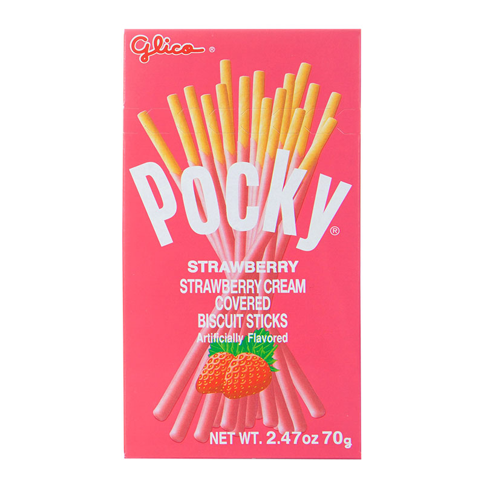

CookiePedia
Galleta Maria
La galleta maría2 (en inglés: Marie biscuit) es un tipo de galleta dulce
muy consumida en países de Europa, América y en otros como India, Pakistán, Sudáfrica o Australia.
Fueron creadas en Londres en 18743 por Peek Freans, una empresa inglesa de galletas, para conmemorar el
matrimonio entre la Gran duquesa María Aleksándrovna de Rusia y el príncipe Alfredo I de
Sajonia-Coburgo-Gotha, hijo de la Reina Victoria.4
Se hizo muy popular en varios países de Europa,5 particularmente en España donde, después de la Guerra
Civil, la galleta se convirtió en un símbolo de recuperación económica debido a que las panaderías las
producían masivamente, gracias a excedentes en las cosechas de trigo que abarataron su precio.
En Las Palmas de Gran Canaria, capital de la provincia de Las Palmas en las Islas Canarias, España, las
fabricó durante al menos 25 años la empresa Galletas Tamarán, situada en el barrio de las Alcaravaneras,
junto al Estadio Insular, que servía a toda la isla.
Galleta rellenas
Las galletas rellenas son un tipo de galletas que consisten de dos tapas y un relleno. Muchos tipos de relleno son utilizados, como ganache, crema de mantequilla, chocolate, queso crema, mermelada, mantequilla de maní, crema de fruta y helado, entre otros. El pastel Whoopie es considerado un tipo de galleta rellena.
Galleta Oblea

Una oblea (también llamada wafer) es un pastel que data de la Edad Media, de
forma delgada y redonda, compuesta de harina y agua, leche o vino blanco 1 con huevos, azúcar y a
veces, miel .
Se cocina entre dos planchas (moldes de oblea), como los gofres, o a veces se aplana en un carrete
vacío. En Alemania, es una galleta delgada con una base de pan ácimo con azúcar. En Suiza, las obleas se
llaman bricelets . A Argelia, en la década de 1950 (antes de la independencia), los vendedores
ambulantes ofrecían obleas de París
Galleta marinera
La galleta marinera, también llamada galleta marina o galleta náutica (hardtack o sea biscuit en inglés) es un tipo de pan horneado, hecho con una pasta a base de harina, sal, y agua . Es adecuada para ser ingerida sola o con innumerables acompañamientos, tanto salados como dulces. Se diferencia de las galletas clásicas por su sabor salado.
Galleta pretzel
Un bretzel, pretzel o lazo salado es un tipo de galleta o bollo horneado, y retorcido en forma de lazo, con un sabor ligeramente salado. Su origen se encuentra en Alemania, y es bastante popular en la Suiza germanoparlante, Austria, Alsacia (Francia) y América del Norte.
Galleta de la fortuna
La galleta de la suerte o de la fortuna es una especie de galleta de paredes delgadas y crujiente que ha sido horneada, en su interior lleva una pequeña tira de papel con palabras de sabiduría o profecías. Según una creencia popular para poder adquirir la fortuna de las galletas se debe ingerir la misma completamente incluido el lienzo en el que se encuentra la fortuna. Algunas también de forma jocosa revelan futuros resultados de lotería o diferentes bromas relacionadas con el futuro. Estas galletas no se inventaron en China, como se cree a menudo a nivel popular, sino que sólo recientemente fueron introducidas en ese país, en principio para complacer los caprichos y gustos de los turistas en las grandes ciudades, como Hong Kong y Pekín.
Galleta poki
El Pocky (ポッキー Pokkī?) es una golosina japonesa que consiste de un palito de
galleta cubierto con chocolate, pero con el tiempo los sabores de las cubiertas se han expandido a
varias opciones. Es producido por Ezaki Glico Company.
Fue vendido por primera vez en 1966,1 con su sabor original de chocolate. Fue bautizado como "Pocky"
por la onomatopeya japonesa cuando el Pocky es mordido, pokkin (ポッキン). En 1971, fueron elaborados un
Pocky con cubierta de almendra y en 1977 con cubierta de fresa.
Actualmente la serie de productos incluyen sabores como leche, mousse, té verde, miel, banana y coco, y
de igual modo versiones especiales como el "Deocrer Pocky" que tiene cubierta de franjas coloridas y el
"Men's Pocky", una versión "madura" hecha de chocolate negro (agridulce), el Pocky Panda es otra
variedad que viene con chocolate blanco y negro entrelazado. También se venden variedades regionales
como uva (en la prefectura de Nagano), melón yūbari (Hokkaidō), mikan gigante (Kyushu), té de azuki
(Kioto), vino de Kobe (Kōbe) y mora de cinco lo sabores (Goka) además de Pocky especiales que son más
gruesos que los corrientes.
El Pocky es muy popular en Japón, sobre todo entre los jóvenes. También ha tenido una presencia
significativa en otros países del Este de Asia como Corea del Sur (donde la empresa Lotte creó su propia
marca Pepero basada en la premisa de Pocky) y China. En Europa, es conocido como Mikado, por el juego de
palitos. En Estados Unidos y Canadá, se venden principalmente en supermercados asiáticos. En México
pueden ser encontrados muy fácilmente en supermercados comunes y también en tiendas departamentales. En
Colombia, se vende en tiendas especializadas en productos de anime y dulces japoneses. En Chile, se
puede encontrar en supermercados de productos asiáticos junto a otras golosinas japonesas.
El día del pocky se celebra el día 11 de noviembre, esto porque es el 11 del mes 11, y los 1 representan
como un pocky.